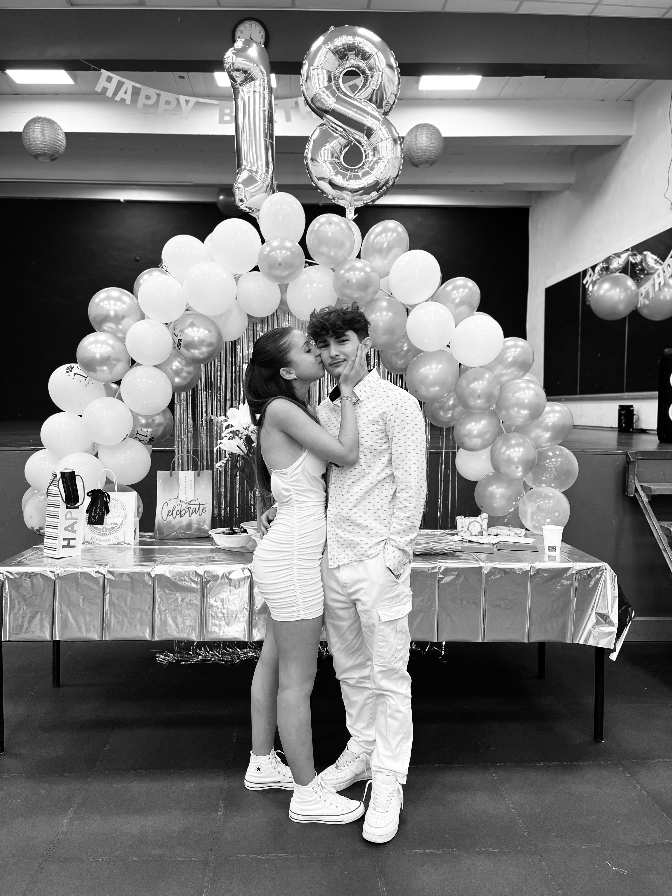
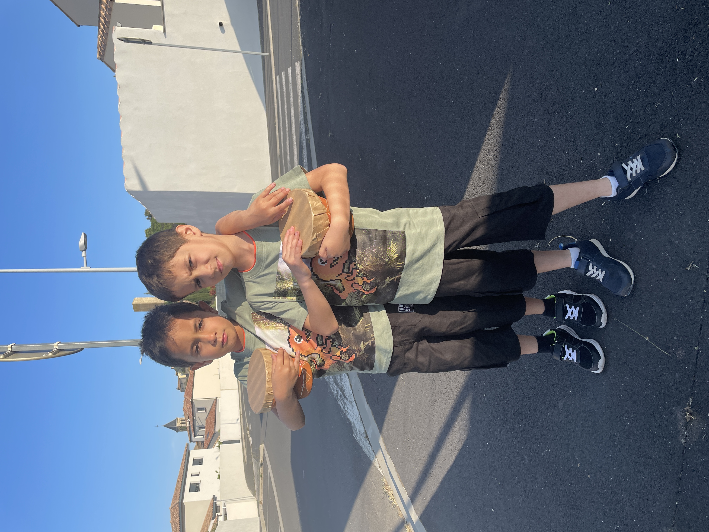

Moi bg

Ma femme

Il était une fois un garçon nommé Khurshed, né au Tadjikistan le vendredi 13 janvier 2006. Il vit en Russie avec ses parents jusqu'à ses 9 ans, puis ses parents décident de déménager en France, et cette décision va changer leurs vies. Il apprend très vite la langue française et réussit à s'intégrer dans la société dans laquelle il vient d'arriver. Khurshed est quelqu'un de très souriant qui aime s'amuser. Il a beaucoup de passions comme la trottinette, le parkour, les trampolines, la guitare, les animés et les films.
Au collège, Khurshed était un élève pas très sérieux et avait du mal avec les cours. Il a même raté son brevet car il ne voyait pas l'importance de travailler. Arrivent les années du lycée, Khurshed a malheureusement grandi trop vite et s'est mis à fumer, mais pas seulement des cigarettes. Il enchaîne les soirées avec ses amis, ne travaille pas et cherche uniquement à profiter de sa jeunesse, jusqu'au jour où sa mère s'est rendu compte qu'il était bizarre en rentrant d'une soirée. Ce jour-là a été un moment que Khurshed ne voudrait plus jamais revivre, car il a vu sa mère pleurer, et c'était de sa faute. Depuis, il n'a plus jamais touché à ces choses qui lui brisaient les rêves.
Un peu plus tard, la famille décide de déménager et choisit un petit village situé aux alentours de Béziers, Montady, un village calme avec une jolie vue sur la colline. Khurshed a redoublé la seconde et s'est mis à travailler. Il est passé d'une moyenne de 8 à 14. Il a également rencontré une fille qui est tombée amoureuse de lui discrètement, une fille belle et très intelligente. Ils sortent ensemble le 16 juillet 2023, et depuis, ils passent leurs meilleurs moments ensemble.
Khurshed est devenu sérieux quand il s'agit des examens ; il décroche des superbes notes au bac de français : 17 à l'écrit et 18 à l'oral. Aujourd'hui, à côté de ses études, il se lance dans le streaming de jeux vidéo. Ce Khurshed est en fait moi, comme vous l'avez compris ;). Voilà, merci pour votre attention.